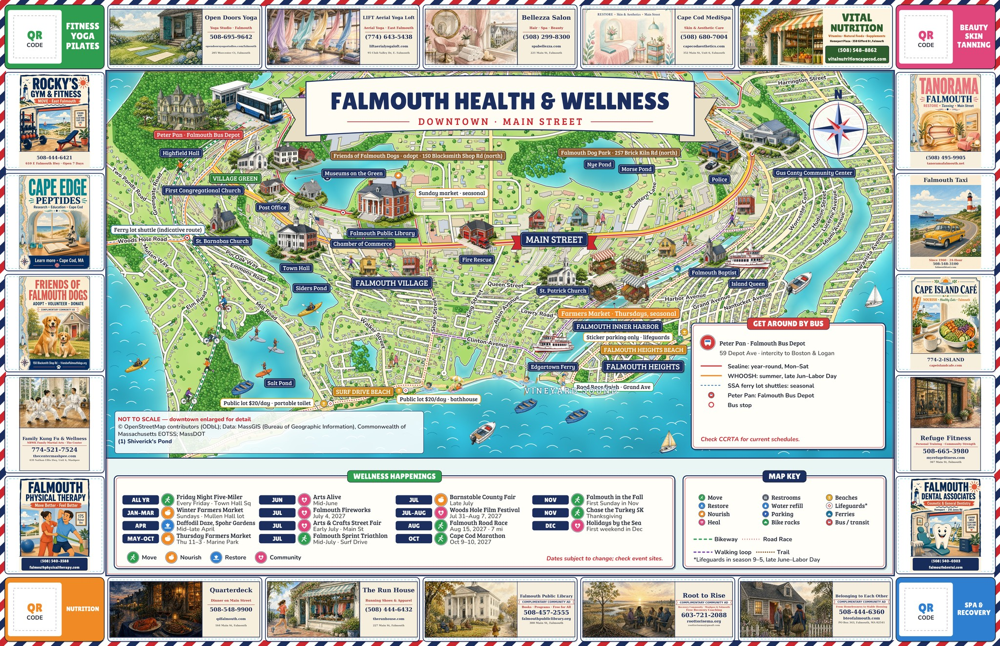
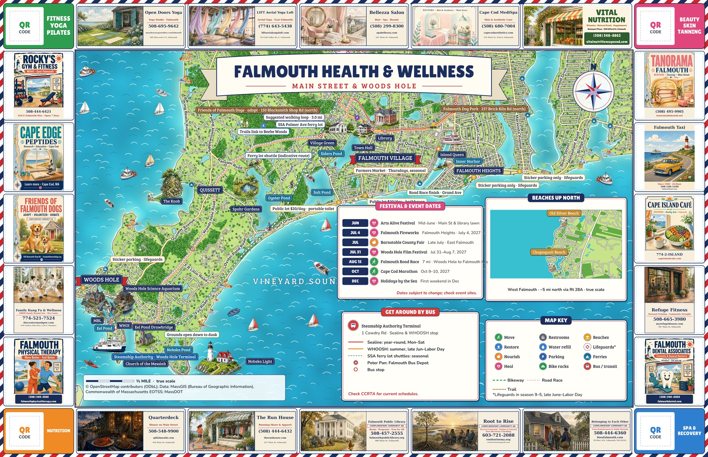

Well
town
· Falmouth, MA
Town hub
Maps
Directory
Magazine
Pets
Puzzles
Sports
Good News & Dates
Visionaries
Artist Corner
VR Explore
VR Shops
The Falmouth wellness maps

Side 1 — Downtown

Side 2 — Main St / Woods Hole
Every corner QR on the print map lands on a
category directory
.